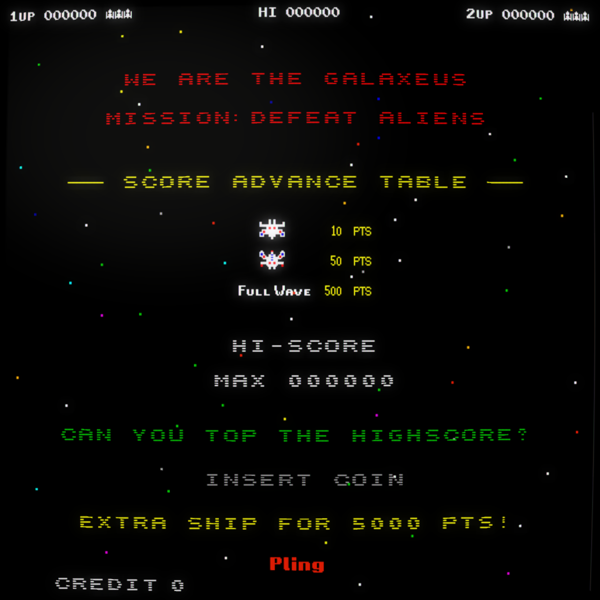
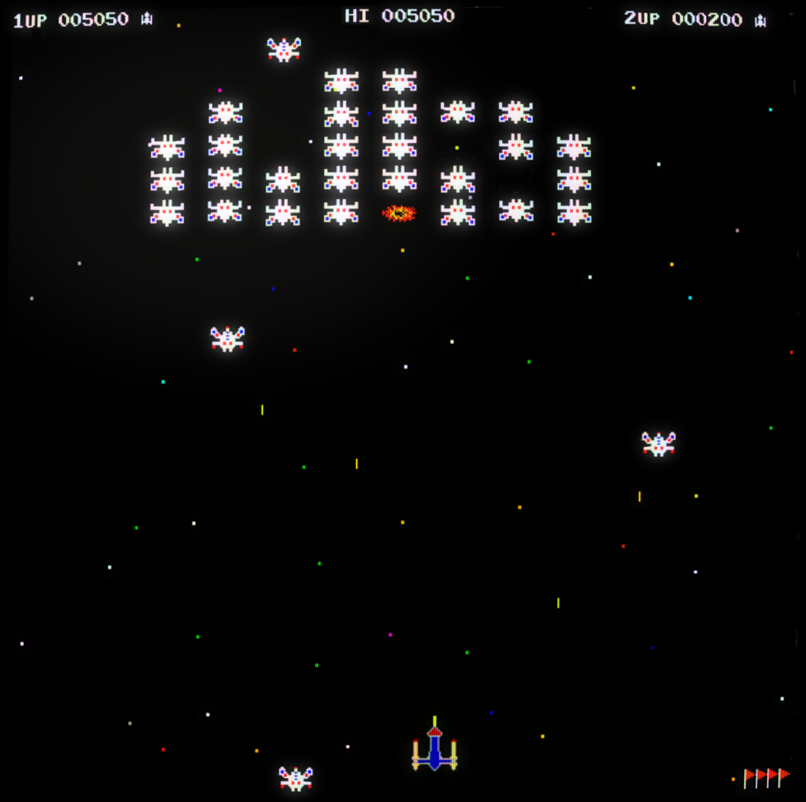
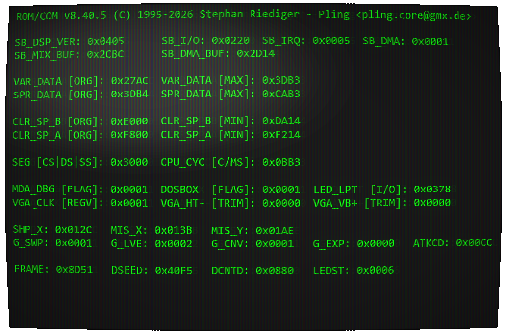
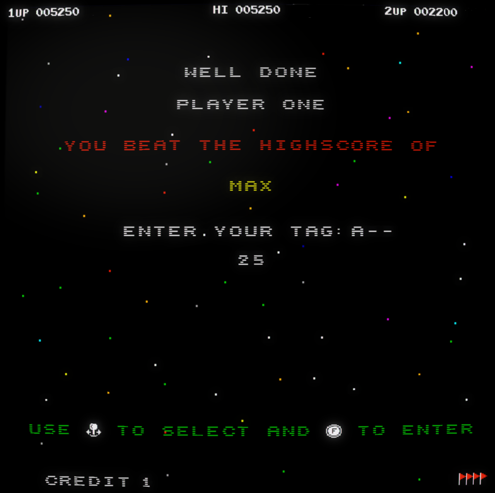
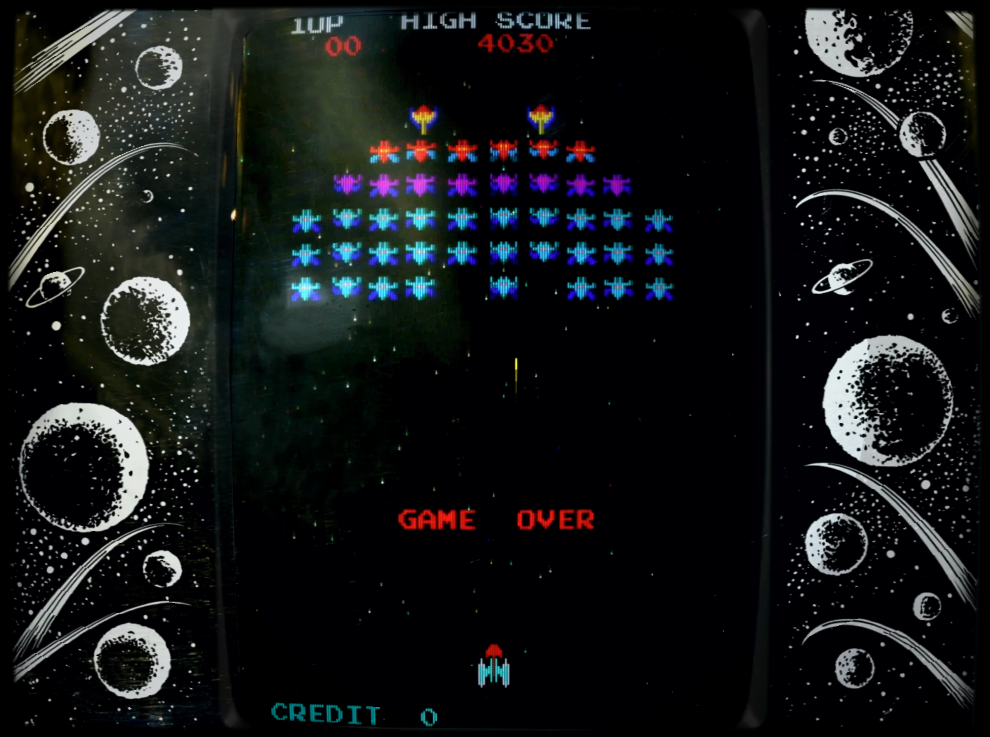

Welcome to Galaxeus - an authentic ’80s DOS and bare-metal arcade shooter written entirely in x86 assembly language. Built specifically for vintage ISA PC hardware, it delivers an industrial-quality ’80s arcade experience on four-decade-old machines, rarely seen before.
Back in the 1980s, arcade machines in malls and fast-food joints were in a league of their own, while home computers usually got simplified, clunky, and often disappointing ports. Over the past decades, I worked on this ambitious project to close that gap. Galaxeus is engineered to run smoothly on even the slowest 386 ISA bus hardware. Even a puny 8-bit ISA VGA will be sufficient to experience the full speed at a rock-solid 67 frames per second at 16-color high-res. Crafted in pure assembly with no frameworks or abstractions, it squeezes every bit of performance out of old hardware to capture that true arcade feel.

As a decadently nerdy bonus, simply having an extra MDA or Hercules card installed automatically activates a dedicated text display for debugging and live in-game telemetry.
Just like a real arcade machine, Galaxeus features an attract mode. If you leave it alone on the title screen, it starts playing short demos to show off the game. And it doesn't just fly around erratically like I drive my car on the autobahn. I coded a custom system so it looks like a real human is holding the joystick, doing proper maneuvers, last-second dodges, and timed shots. I wanted the cabinet to feel alive even when nobody is playing. Basically, it's my own little piece of fake AI. The whole thing fits into 140 bytes. 😏
Other hardware-level features include saving high scores to the battery-backed CMOS, direct LPT LED control, Boot ROM support, and a bare-metal Floppy Booter with configuration and disk-cloning options.

Galaxeus comes with everything you need to build an OS-less, solid-state, ROM-based arcade machine with no moving parts, like a hard drive or floppy disk. In fact, I built one.
I wrote my first lines of code back in 1982, and I’ve woven every trick picked up along the way directly into Galaxeus. Over the years, I've found modern development's endless layers of abstraction getting increasingly overwhelming and disconnected. Today, it feels like snapping pre-made blocks together rather than building something from the ground up. Vibe coding is the final nail in the coffin. As someone who views coding as a true craft, I miss the hands-on joy of understanding a system down to its roots.
With Galaxeus, I wanted to chop every binary vegetable and blend every digital spice from scratch, right down to the bare metal. The journey was just as much about mastering the quirks of classic hardware as it was about finishing the game - guided by a manic motto: solving yet-unsolved challenges unique to decades-old hardware. Seeing what you can do in pure assembly really puts the bloat of modern software into perspective.
The origin of this project goes all the way back to my childhood. When I was eleven years old in 1981, I saw my first arcade machine inside a showman's caravan at a local funfair, and since then I could not stop thinking about it. It was a bit like my own Harry Potter moment, stumbling into a hidden, magical world, even though I didn't have a clue how any of it worked back then.

The game was Galaxian, which inspired the name of the project. That moment sparked a lifelong fascination with computers and science, making me want to understand how machines like that work and learn how to build one myself. After all these years, turning that childhood memory into a real arcade cabinet has been my favorite way to unwind and recharge my mental batteries.
So Galaxeus is my nostalgic reminder of why so many of us fell in love with computing in the first place. Every single byte serves a purpose, every wire has a story, and the magic is still very real.
Unfortunately, Galaxeus won't run as smoothly under DOSBox variants as it does on native hardware. This is due to a fundamental architectural flaw in the emulator: both DOSBox and DOSBox-X experience audio stuttering whenever the emulated frame rate exceeds the monitor's actual refresh rate. This happens because they tie video frames and audio data together into tight, interdependent chunks. The README provides tips on how to mitigate this. 86Box does a better job, but is still not as good as real hardware. Ultimately, I highly recommend running Galaxeus on real hardware - I promise the smoothness, crispness, and authentic arcade feel will amaze you!
Controls: Galaxeus uses standard MAME keys to insert coins and start a 1- or 2-player game.
Galaxeus-specific keys:
| F1 | Reset High Score |
| F2 | Service Screen CRT/TFT Calibration |
| ESC | Quit / Rage Quit 🤬 / Leave Current Screen |
Download Galaxeus and see what it can do on your retro setup.